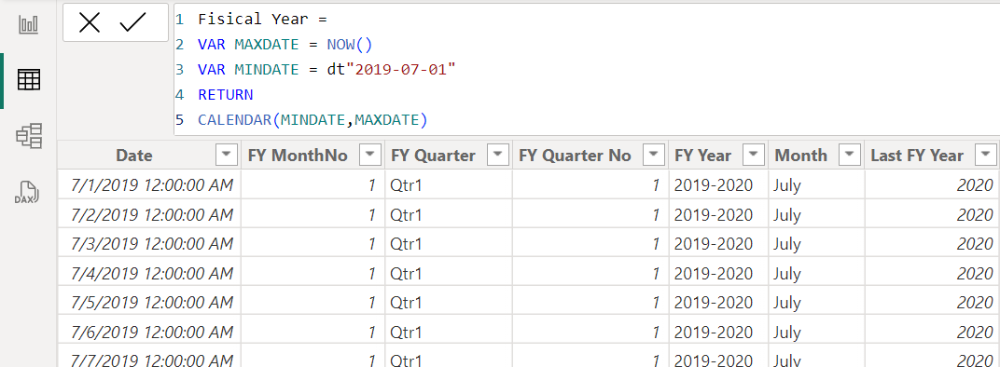
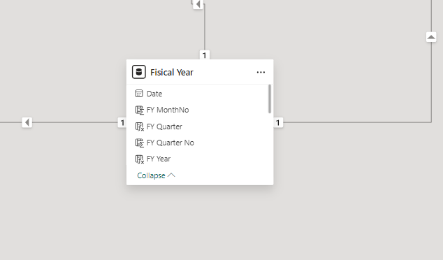
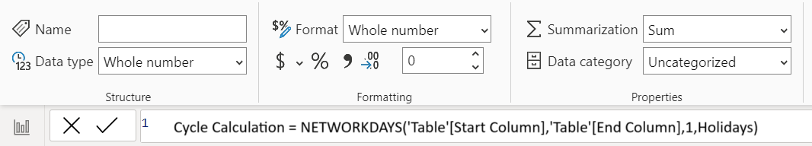
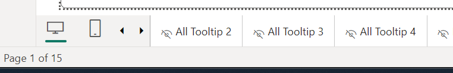

As an Intern for Delete the Divide I had the opportunity to work with LA County's Internal Services Departments(ISD)
Enterprise Performance & Accountability(EPA) division where I created dynamic data visualizations for various division within ISD.
For my second project with EPA I was tasked with creating dashboards that analyze cycle times provided by the audit team.
Due to insufficient data, it was decided that the best course of action would be to create synthetic sample data to work with til sufficient
data was recorded. Half of the data was created using ChatGPT and the rest was provided by the audit team.
*Please note that although the data used was synthetic, it is still subjected to confidentiality.
It is intended for internal use only and should not be shared with individuals outside the organization without prior authorization.
As a result, I will refrain from presenting actual results derived from the data and instead I will concentrate on my overall process
in designing and creating the dashboards.*
Objective:
The objective of these dashboards is to provide an overview of the audit process timeline and identify any bottlenecks within the process for
3 seperate types of audits. We want to highlight where in the audit process, information collection, and passing of the information is delayed.
This is important as we want to faciliate better communication and ensure that all audits are completed within a reasonable timeframe.
Key Metrics and KPIs:
Number of Incidents
Average Cycle Time to Complete Audit
% Response Time to Target
Average Response Time
Various Average Cycle Times for X to Receive/Respond from Y.
Data Collection & Preprocessing:
Synthetic data was partially created using ChatGPT as well as provided by the audit team. The synthetic data consisted of records for 3 seperate
types of audits. The data was than merged onto an Excel Spreadsheet and prepared for import into power BI. The data was cleaned and transformed to
remove any mistakes and inaccuracies. For example, missing values, duplicates, inconsistent data formats, chronologically inconsistent dates, etc.
Preprocessing of the data was done to ensure data consistency, completeness, and quality.
Data Connection:
Imported the Excel Spreadsheet into Power BI and small scale data transformation was done to verify once more that the data is ready to use.
Another seperate Excel Spreadsheet imported into Power BI was a file containing federal holidays.
Data Modeling:
Created a calendar table for fiscal year that contains dates using DAX. The calculation used a self-decided start date and an end date set
to the latest present date.
Date hierarchy was adjusted to accommodate our desired fiscal year which starts in July as opposed to the default value January.
This allowed us to drill down the hierarchy more accurately (Year -> Quarter -> Month -> Day).
Relationships were created between the calendar table on the date field and the start date field of the 3 separate audit types.
Used DAX functions to add new columns that calculate cycle times as well as to create measures with those new columns to make further
calculations with conditional DAX Functions.

How I created a calendar table for fiscal year using DAX.

In Model View I created a relationship between the Date field of my Fiscal Year table and the Start Date field
of each of the 3 Audit type tables.

DAX function that returns the number of whole workdays between two date.
1 indicates the days of the week that are considered weekend days so, omit Saturdays and Sundays.
Holidays represents a column table of one or more dates that are to be excluded from the working day calendar.
*Hover over an image (desktop) or tap on an image (mobile) to view it's attached description.*Select an image to open in a new tab to inspect further (desktop only).
Designing the Dashboards:
I developed a visual that represents each KPI and metric that I was tasked with. I utilized various visuals such as cards, matrices,
clustered column charts, and line and stacked column charts. These visuals were customized using a variety of formatting options.
I applied ISD branding elements consistently throughout the dashboards, including using the correct color palette for visual
elements such as charts and headers, and ensuring appropriate placement of these elements.
Worked on visual placements to standardize sizes and alignment, minimizing whitespace and enhancing overall visual coherence.
Incorporated a caveats page to ensuring transparency and clarity in data interpretation.
Adding Interactivity:
Added filters through the Filters pane to each visual to ensure that the end date of each record of the specific cycle field selected are not blank.
Want to exclude records where the end date is blank and use only valid records for better visual representation and accuracy.
Added slicers to dynamically filter data, including options for fiscal year, assessable unit, assigned audit member, and external auditor name.
I designed multiple tooltips using shapes and formatted them to meet my specific needs such as text, size, color, and other elements.
A tooltip was then added to each visual to provide an explanation of which columns were used for each calculation. This provides clarity
and is the most efficient way for a user to access this information and confirm it's accuracy. Tooltips were then hidden and only
accessed in the editing mode.

A separate tooltip was created for each visual and hidden from the user when in viewing mode for a cleaner look.
*Hover over an image (desktop) or tap on an image (mobile) to view it's attached description.*Select an image to open in a new tab to inspect further (desktop only).
Review:
Weekly meetings with the audit team where held to showcase the latest version of the dashboards and to recieve feedback. Refining the visuals to ensure both readablity
and usability for end-users was extremly important.